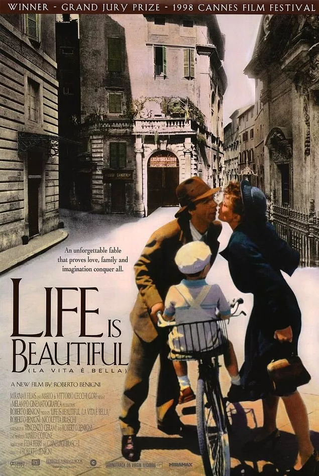

II. Dünya Savaşı’nın birkaç yıl öncesini anlatarak başlayan filmde başkahramanımız hayat dolu Guido, güzeller güzeli öğretmen Dora’ya aşık olur ve tüm engellere rağmen evlenirler. Ardından bir de çocuk sahibi olan çiftin hayatlarındaki tüm pürüzler ortadan kalktığında savaş patlak verir. Yahudi oldukları için toplama kampına götürüldüklerinde Guido, oğluna esir kampının ve savaşın bir oyun olarak söyleyecek; oğlu, oyunu başarıyla tamamlarsa ödül olarak gerçek bir tank kazanacaklarını söyler. II. Dünya Savaşı’nın sivillerin üzerindeki yıkıcı etkisini beyaz perdeye en iyi uyarlayan filmlerden biri olan Hayat Güzeldir, tüm olumsuzluklara rağmen her daim bir umut ışığı olduğunu adında olduğu gibi, içeriğinde de barındırıyor. Gösterime girdiği dönem büyük ses getiren film Akademi’nin de büyük ilgisine nail olup, En İyi Yabancı Film, En İyi Erkek Oyuncu ve En İyi Film Müziği olmak üzere üç dalda Oscar ödülü kazanmıştır.
